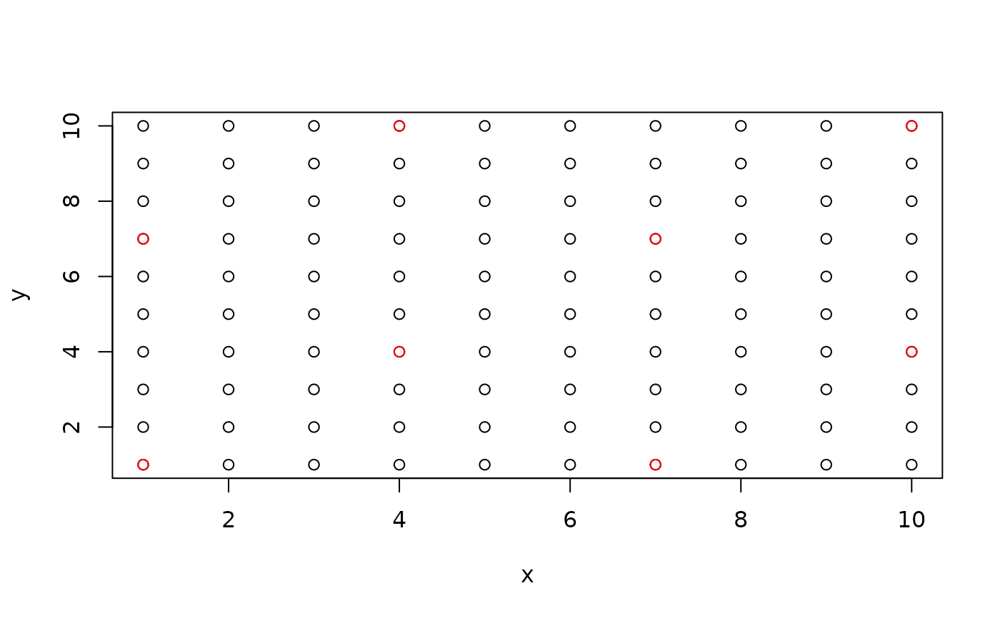
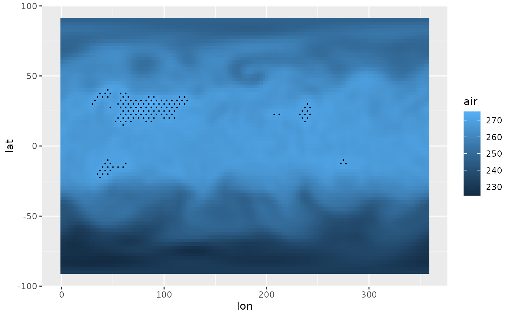

Reduces the density of a regular grid using a cross pattern.
is.cross(x, y, skip = 0)
cross(x, y)x and y points that define a regular grid.
how many points to skip. Greater value reduces the final point density.
is.cross returns a logical vector indicating whether each point belongs to the
reduced grid or not.
cross returns a list of x and y components of the reduced density grid.
# Basic usage
grid <- expand.grid(x = 1:10, y = 1:10)
cross <- is.cross(grid$x, grid$y, skip = 2)
with(grid, plot(x, y))
with(grid, points(x[cross], y[cross], col = "red"))

# Its intended use is to highlight areas with geom_subset()
# with reduced densnity. This "hatches" areas with temperature
# over 270K
library(ggplot2)
ggplot(temperature[lev == 500], aes(lon, lat)) +
geom_raster(aes(fill = air)) +
stat_subset(aes(subset = air > 270 & is.cross(lon, lat)),
geom = "point", size = 0.1)
